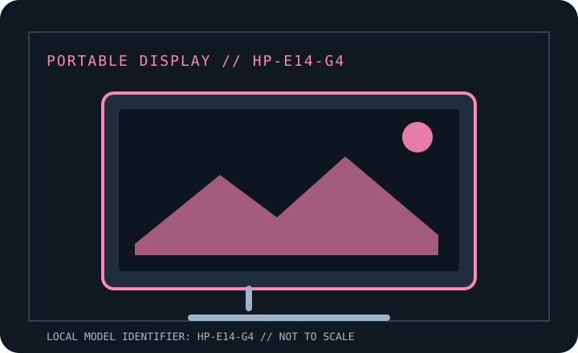

[ INDIVIDUAL COMPONENT // DISPLAYS ]
HP E14 G4 Portable Monitor
Manufacturer-specific portable monitor record. Verify the full rear-label SKU, region and documentation revision before connecting power or relying on a maximum mode.

IDENTIFICATION: Portable computer monitor SKU with a unique model record. Match the rear label and regional suffix to the manufacturer's product page/manual; similarly named models may use different ports or power behavior.
Specifications
| Catalog subcategory | Portable displays |
|---|---|
| Exact product / family | HP E14 G4 Portable Monitor |
| Panel / diagonal | 14-inch IPS LCD |
| Native resolution | 1920 × 1080 (Full HD) |
| Native refresh / maximum | 60 Hz |
| Brightness (typical) | 400 cd/m² typical |
| USB-C interface | Two USB-C ports with DisplayPort 1.2 Alt Mode video and USB Power Delivery pass-through (up to 65 W to a compatible notebook with suitable external power). |
| HDMI interface | No HDMI input. Video is USB-C DP Alt Mode only; an HDMI source requires a compatible active converter that also addresses monitor power and is not guaranteed by HP. |
| Power / USB Power Delivery | USB-C bus power; a compatible external USB-C charger can pass up to 65 W to a supported notebook through the monitor. No built-in battery. |
| OSD / controls | Onboard button/OSD controls for image settings; standard display operation does not require a special graphics driver. |
| Stand / mounting | Integrated fold-out stand/protective cover supports tabletop positioning; no VESA mount. Stand angle and accessory bundle should be checked for exact regional SKU. |
Host, OSD & compatibility notes
USB-C port on host must support DisplayPort Alt Mode for video. Power passthrough additionally requires USB PD on host, charger and cable. Use HP setup guidance for supported systems and OS-specific behavior.
Model-specific caveat: Do not mistake USB-C charging support for video capability; data-only USB-C ports will not drive the screen. HP cites 65 W pass-through only under compatible PD conditions; charge rate depends on the connected adapter and notebook.
Field use & preservation
Protect the LCD/touch surface in transport, avoid loading the USB-C or HDMI sockets sideways, and test video, power and touch (where fitted) as separate signal paths. Keep the correct cable and power adapter with the monitor.
Record the rear-label model/serial, included cover/stand, cable and adapter ratings, signal timing, OSD configuration, panel condition and any repaired or substituted accessories. Do not open the enclosure; use the manufacturer's service procedure and a qualified technician.
Manufacturer documentation & sources
- HP — E14 G4 official product specificationsManufacturer specification record for the product, panel and supported connections.
- HP Support — E14 G4 setup and user guidesOfficial manuals/setup documentation for the E14 G4 family.